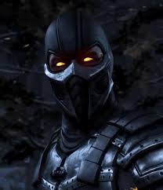

Smoke
В Mortal Kombat X (и издании XL) Смоук не является полноценным играбельным персонажем, а выступает в сюжете как нежить-ревенант на службе у Куан Чи и Шиннока. По сюжету он отвергает свое старое имя и предпочитает называться демоном-эненра.
💨 Воскрешение киборгов — Триборг. В рамках второго набора бойцов (Kombat Pack 2) в игру был добавлен новый киборг Триборг (сочетающий в себе сознание Сектора, Сайракса, Смоука и Кибер Саб-Зиро).Выбрав вариацию Триборга-Смоука, игрок получает доступ к классическим приемам ниндзя-киборга: невидимости, телепортации и броскам в воздухе.